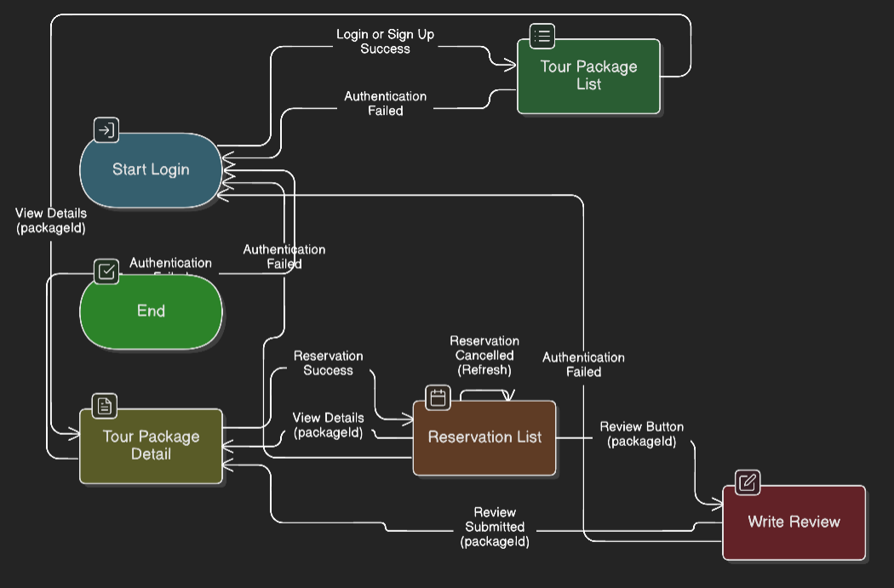

UI 계층 개발 가이드
1. AppPage: 모든 화면의 기초
이 프로젝트의 모든 UI 화면(페이지)은 `AppPage`라는 클래스를 상속받아(extends) 만든다. `AppPage`는 화면 개발에 필요한 **4가지 핵심 도구**를 제공한다.
개발자는 이 4가지 도구 사용법만 익히면 된다.
`AppPage`의 4가지 도구
1. ServiceContext (매니저 접근)
`ServiceContext`는 `UserManager`, `TourCatalog` 등 비즈니스 로직이 담긴 매니저 객체들의 보관함이다. `AppPage`의 생성자에서 받아, 필요한 매니저를 꺼내 사용한다.
public class LoginPage extends AppPage {
// 1. 사용할 매니저를 필드로 선언
private UserManager userManager;
private SessionManager sessionManager;
public LoginPage(ServiceContext context) {
super(context); // 2. 부모 생성자에 context 전달 (필수)
// 3. context에서 필요한 매니저 인스턴스를 꺼냄
this.userManager = context.get(UserManager.class);
this.sessionManager = context.get(SessionManager.class);
initUI(); // 4. UI 초기화
}
// ...
}
2. runAsyncTask (시간이 걸리는 작업)
DB 조회, API 호출, 파일 읽기 등 **시간이 걸리는 작업**은 반드시 `runAsyncTask` 안에서 처리해야 한다. 이것을 사용하면 작업 중에도 앱(UI)이 멈추지 않는다.
`runAsyncTask`는 3개의 "작업 내용(람다식)"을 전달받는다.
runAsyncTask(
() -> {
// 1. 작업 내용 (백그라운드)
// userManager.login()이 Long 타입의 userId를 반환한다고 가정
return userManager.login("id", "pw");
},
(userId) -> {
// 2. 성공 시 (UI 업데이트)
// 1번 작업이 성공하면, 결과(userId)를 받아 실행됨
sessionManager.login((Long) userId);
navigateTo("tourList");
},
(error) -> {
// 3. 실패 시 (UI 업데이트)
// 1번 작업이 실패하면, 에러(error)를 받아 실행됨
JOptionPane.showMessageDialog(this, "로그인 실패");
}
);
3. navigateTo (페이지 이동)
다른 페이지로 화면을 전환할 때 사용한다.
// 1. 단순 페이지 이동
navigateTo("tourList");
// 2. 데이터를 전달하며 페이지 이동 (ID가 123L인 상세 페이지로)
Long selectedTourId = 123L;
navigateTo("tourDetail", selectedTourId);
4. AppEventBus (이벤트 발행/구독)
다른 페이지에 "소식(이벤트)"을 전할 때 사용한다.
// (ReviewWritePage - 리뷰 작성 페이지)
private void onSubmitClick() {
// ... 리뷰 등록 로직 ...
// 1. "리뷰가 추가되었다"는 이벤트를 앱 전체에 방송(발행)
publishEvent(new ReviewAddedEvent(newReview));
}
// (ReservationListPage - 예약 목록 페이지)
public ReservationListPage(ServiceContext context) {
super(context);
// 2. "리뷰 추가" 이벤트를 구독
subscribeEvent(ReviewAddedEvent.class, event -> {
// 다른 페이지에서 리뷰가 추가된 것을 감지
loadReservations(); // 목록 새로고침
});
}
`AppPage`의 2가지 필수 규칙
`AppPage`를 상속받으면, 2가지 메서드를 반드시 구현(Override)해야 한다.
public class TourListPage extends AppPage {
// ... (생성자) ...
/**
* 1. (필수) 이 페이지의 고유 ID를 반환한다.
* navigateTo("tourList") 호출 시 이 ID가 사용된다.
*/
@Override
public String getPageId() {
return "tourList";
}
/**
* 2. (필수) 이 페이지가 화면에 보일 때마다 호출된다.
* @param contextData navigateTo로 전달된 데이터 (없으면 null)
*/
@Override
public void onPageShown(Object contextData) {
// 데이터를 로드하는 로직(runAsyncTask)은 보통 여기서 호출한다.
loadTours();
}
private void loadTours() { /* ... runAsyncTask ... */ }
}
2. ui-kit: 화면을 조립하는 부품
`ui-kit` 패키지는 화면을 구성하는 "표준 부품" 세트다.
규칙: 화면(AppPage)을 만들 때, UI는 반드시 `ui-kit`의 컴포넌트(
AppButton,AppLabel등)를 사용해 조립한다.
`ui-kit` 컴포넌트의 사용법은 `JButton`, `JLabel` 등 기존 Swing 컴포넌트와 동일하다. 앱의 모든 폰트, 색상, 스타일이 이미 적용되어 있다.
기본 부품: AppLabel, AppButton, AppTextField
// 1. 레이블 (타입 지정 가능)
AppLabel title = new AppLabel("환영합니다", AppLabel.LabelType.TITLE);
AppLabel normalText = new AppLabel("ID:");
// 2. 텍스트 필드
AppTextField idField = new AppTextField(20);
// 3. 버튼
AppButton loginButton = new AppButton("로그인");
// 4. 사용법은 기존과 동일
loginButton.addActionListener(e -> {
String id = idField.getText();
// ...
});
// 5. 패널에 추가
this.add(title);
this.add(normalText);
this.add(idField);
this.add(loginButton);
레이아웃 부품: AppPanel, AppTitledPanel
컴포넌트들을 그룹화하여 배치할 때 사용한다. HTML의 `<div>`와 비슷하다.
AppPanel (투명 `div`)
여러 컴포넌트를 묶기 위한 투명한 패널이다. 레이아웃을 잡는 용도로만 사용한다.
AppTitledPanel (제목 있는 `div`)
"사용자 정보", "검색 조건"처럼 제목이 있는 경계선으로 컴포넌트들을 묶을 때 사용한다.
// (AppPage 내부에서...)
this.setLayout(new BorderLayout(10, 10));
// --- 1. 검색 영역 (제목 있음) ---
AppTitledPanel searchPanel = new AppTitledPanel("검색 조건");
searchPanel.setLayout(new FlowLayout(FlowLayout.LEFT));
searchPanel.add(new AppLabel("이름:"));
searchPanel.add(new AppTextField(15));
searchPanel.add(new AppButton("검색"));
this.add(searchPanel, BorderLayout.NORTH);
// --- 2. 버튼 영역 (단순 그룹핑) ---
// AppPanel은 배경이 투명하다.
AppPanel buttonPanel = new AppPanel(new FlowLayout(FlowLayout.RIGHT));
buttonPanel.add(new AppButton("저장"));
buttonPanel.add(new AppButton("취소"));
this.add(buttonPanel, BorderLayout.SOUTH);
편의 부품: AppTextArea
여러 줄 텍스트 입력 시 사용한다. 스크롤바가 자동으로 내장되어 있어 편리하다.
// AppTextArea는 스크롤바가 포함되어 있다.
AppTextArea newArea = new AppTextArea();
panel.add(newArea); // 1줄로 끝.
// 사용법은 동일
newArea.setText("자동으로 줄바꿈 및 스크롤이 적용됩니다.");
String text = newArea.getText();
기타 부품
`AppComboBox` (드롭다운), `AppProgressBar` (진행률) 등도 모두 기존 사용법과 동일하며, 앱 스타일이 자동 적용된다.
3. 페이지 전환 시나리오 (팀 규약)
여러 페이지를 병렬로 개발하기 위해, 페이지 간 통신 "규약"을 정의한다. 이 규약만 지키면, 다른 사람의 코드를 몰라도 협업이 가능하다.
페이지 흐름도 (Page Flow Diagram)
아래 다이어그램은 우리 앱의 전체 페이지 전환 흐름을 정의한다.

페이지별 통신 계약 (중요)
아래 표는 각 페이지 개발자가 반드시 지켜야 할 입/출력 명세다.
| 페이지 ID | 수신 데이터 (onPageShown) | 발신 데이터 (navigateTo) |
|---|---|---|
login |
null |
navigateTo("tourList") |
tourList |
null |
navigateTo("tourDetail", (Long) packageId) |
tourDetail |
(Long) packageId |
navigateTo("reservationList") |
reservationList |
null |
navigateTo("tourDetail", (Long) packageId)navigateTo("reviewWrite", (Long) packageId) |
reviewWrite |
(Long) packageId |
navigateTo("tourDetail", (Long) packageId) |
4. 시나리오별 예제
앞서 정의한 규약과 도구를 사용해 실제 시나리오를 구현하는 예제다. 개발자는 자신의 담당 페이지에 해당하는 코드 스니펫을 참고한다.
전역 규칙: 로그인 상태 확인
LoginPage를 제외한 모든 `AppPage`는 `onPageShown`의 가장 처음에
로그인 상태를 확인하는 코드를 추가해야 한다.
private SessionManager sessionManager;
public MyPage(ServiceContext context) {
super(context);
this.sessionManager = context.get(SessionManager.class);
// ...
}
@Override
public void onPageShown(Object contextData) {
// [로그인 확인]
if (!sessionManager.isLoggedIn()) {
navigateTo("login"); // 로그인 안됐으면 login 페이지로
return; // 현재 페이지의 나머지 로직 실행 중단
}
// (로그인 보장) ... 페이지 로드 로직 ...
loadMyData();
}
시나리오 1: `LoginPage`
로그인 버튼 클릭 시 `runAsyncTask`로 `UserManager`를 호출하고, 성공 시 `SessionManager`에 등록 후 `MapsTo`로 메인 페이지(`tourList`)로 이동한다.
// (LoginPage 내부)
private void onLoginButtonClick() {
String id = idField.getText();
String pw = pwField.getText();
runAsyncTask(
() -> userManager.checkPassword(id, pw), // 1. 작업 내용 (백그라운드)
(userId) -> {
// 2. 성공 시 (UI 업데이트)
sessionManager.login((Long) userId);
navigateTo("tourList"); // "tourList"로 이동
},
(error) -> { /* 3. 실패 시: 로그인 실패 메시지 표시 */ }
);
}
시나리오 2: `TourListPage` (목록)
`onPageShown`에서 `tourCatalog.getAllTours()`를 비동기로 호출해 목록을 그린다. 상세보기 버튼 클릭 시 `MapsTo`로 `tourDetail`에 `packageId`를 전달한다.
// (TourListPage 내부)
@Override
public void onPageShown(Object contextData) {
if (!sessionManager.isLoggedIn()) { navigateTo("login"); return; }
// 페이지가 보일 때마다 투어 목록 로드
loadTours();
}
private void loadTours() {
runAsyncTask(
() -> tourCatalog.getAllTours(),
(tours) -> { /* 2. 성공 시: (List<TourPackage>)tours로 JList 그리기 */ },
(error) -> { /* 3. 실패 시: 에러 메시지 표시 */ }
);
}
// (JTable 또는 버튼의 클릭 리스너 내부)
private void onDetailViewClick() {
Long selectedId = /* ... JTable에서 선택된 packageId ... */;
navigateTo("tourDetail", selectedId); // "tourDetail"로 packageId 전달
}
시나리오 3: `TourDetailPage` (상세)
`onPageShown`에서 `(Long) contextData`로 `packageId`를 받는다. 이 ID로 `tourCatalog`와 `reviewManager`를 비동기 호출해 상세 정보를 그린다.
// (TourDetailPage 내부)
private Long currentPackageId;
@Override
public String getPageId() { return "tourDetail"; }
@Override
public void onPageShown(Object contextData) {
if (!sessionManager.isLoggedIn()) { navigateTo("login"); return; }
// 전달받은 packageId 확인
if (contextData instanceof Long) {
this.currentPackageId = (Long) contextData;
loadPageData(this.currentPackageId);
} else {
/* ... 잘못된 접근 처리 ... */
}
}
private void loadPageData(Long packageId) {
// 1. 투어 상세 정보 로드
runAsyncTask(
() -> tourCatalog.getTourById(packageId),
(tour) -> { /* 2. 성공 시: (TourPackage)tour로 상세 정보 UI 채우기 */ },
(error) -> { /* 3. 실패 시 ... */ }
);
// 2. 리뷰 정보 로드
runAsyncTask(
() -> reviewManager.getReviewsByTour(packageId),
(reviews) -> { /* 2. 성공 시: (List<Review>)reviews로 리뷰 목록 UI 채우기 */ },
(error) -> { /* 3. 실패 시 ... */ }
);
}
// "예약 버튼" 클릭 리스너
private void onReserveClick() {
Long userId = sessionManager.getCurrentUserId();
runAsyncTask(
() -> reservationManager.reserve(userId, this.currentPackageId, /* ... 날짜 ... */),
(reservation) -> {
// 2. 성공 시: "reservationList"로 이동
navigateTo("reservationList");
},
(error) -> { /* 3. 실패 시: (예: "이미 예약된 상품") 메시지 표시 */ }
);
}
시나리오 4: `ReservationListPage` (예약 목록)
`onPageShown`에서 `sessionManager`의 `userId`로 `reservationManager.getListByUserId`를 호출한다. "리뷰" 버튼은 `MapsTo("reviewWrite", packageId)`를, "취소" 버튼은 `reservationManager.cancel` 후 `onPageShown(null)`을 호출해 새로고침한다.
// (ReservationListPage 내부)
@Override
public String getPageId() { return "reservationList"; }
@Override
public void onPageShown(Object contextData) {
if (!sessionManager.isLoggedIn()) { navigateTo("login"); return; }
loadReservations(); // 목록 로드
}
private void loadReservations() {
Long userId = sessionManager.getCurrentUserId();
runAsyncTask(
() -> reservationManager.getListByUserId(userId),
(reservations) -> {
/* 2. 성공 시: (List<Reservation>)reservations로 목록 그리기 */
/* (이때 "완료" 상태인지 확인하여 "리뷰" / "취소" 버튼 노출 결정) */
},
(error) -> { /* 3. 실패 시 ... */ }
);
}
// "취소" 버튼 클릭 리스너
private void onCancelClick(Long reservationId) {
runAsyncTask(
() -> reservationManager.cancel(reservationId),
(success) -> {
// 2. 성공 시: 새로고침
onPageShown(null);
},
(error) -> { /* 3. 실패 시: 취소 실패 메시지 */ }
);
}
// "리뷰" 버튼 클릭 리스너
private void onReviewClick(Long packageId) {
navigateTo("reviewWrite", packageId); // "reviewWrite"로 packageId 전달
}
시나리오 5: `ReviewWritePage`
`onPageShown`에서 `(Long) contextData`로 `packageId`를 받는다. "완료" 버튼 클릭 시 `reviewManager.writeReview`를 호출하고, 성공 시 `MapsTo`로 `tourDetail`에 `packageId`를 다시 전달하여 상세 페이지로 복귀한다.
// (ReviewWritePage 내부)
private Long currentPackageId;
@Override
public String getPageId() { return "reviewWrite"; }
@Override
public void onPageShown(Object contextData) {
if (!sessionManager.isLoggedIn()) { navigateTo("login"); return; }
// 전달받은 packageId 확인
if (contextData instanceof Long) {
this.currentPackageId = (Long) contextData;
} else {
/* ... 잘못된 접근 처리 ... */
}
}
// "완료" 버튼 클릭 리스너
private void onSubmitClick() {
Long userId = sessionManager.getCurrentUserId();
int rating = /* ... 별점 ... */;
String content = /* ... AppTextArea ... */;
runAsyncTask(
() -> reviewManager.writeReview(userId, this.currentPackageId, rating, content),
(review) -> {
// 2. 성공 시: "tourDetail"로 복귀
navigateTo("tourDetail", this.currentPackageId);
},
(error) -> { /* 3. 실패 시: 리뷰 등록 실패 메시지 */ }
);
}